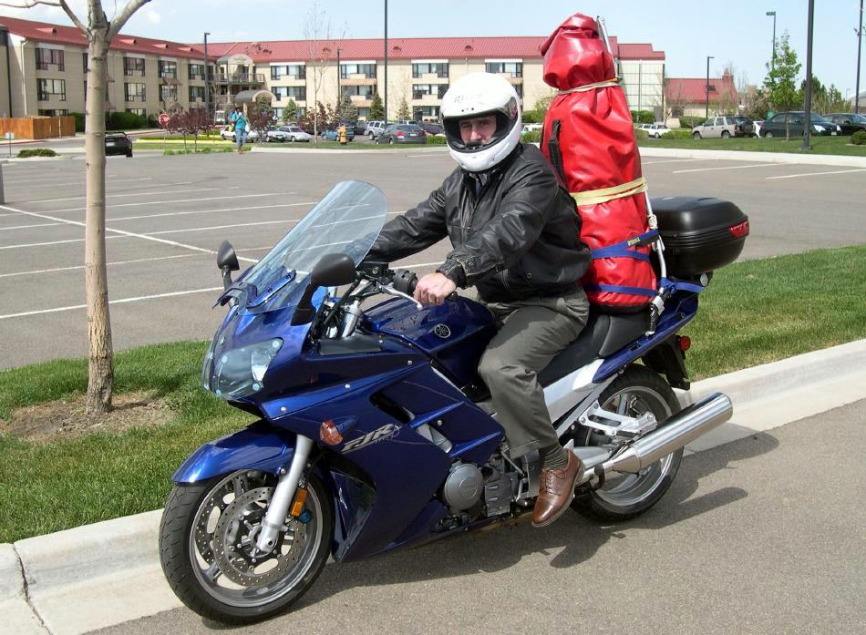

| Folding Kayak - Motorcycle Transport | Menu Last Page Next Page |
|
 During the warm weather months of the year, I must decide several times per week whether to ride my bike, or go kayaking. Ride or kayak, kayak or ride, and on and on it goes. No one ever said that retirement would be easy. Ha! So, I decided to combine the two activities, and built an aluminum kayak carrier that attaches to a motorcycle trunk rack. The kayak, a Sea Otter homebuilt, has a 15ft length, 20in beam, weighs 30 lbs, and folds down to a 42in length. It's light enough, and packs small enough to be easily carried on a motorcycle. Select "Next Page" to continue and use the {BACK} key to return. |
|